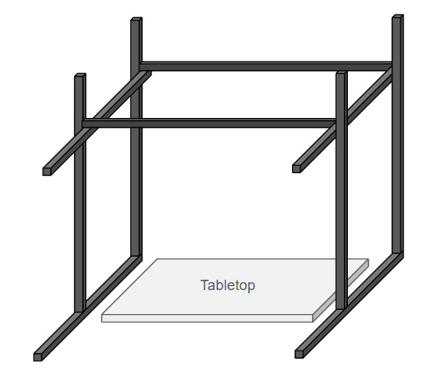
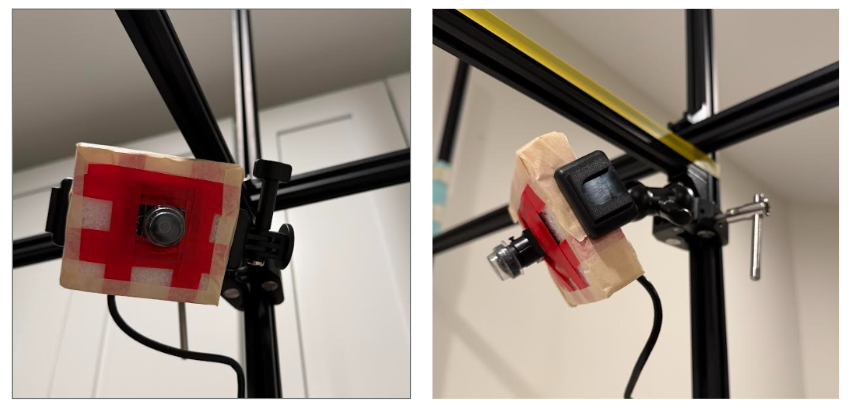
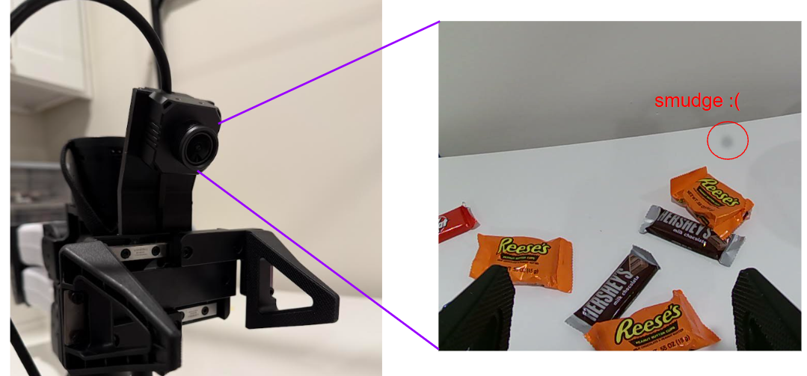
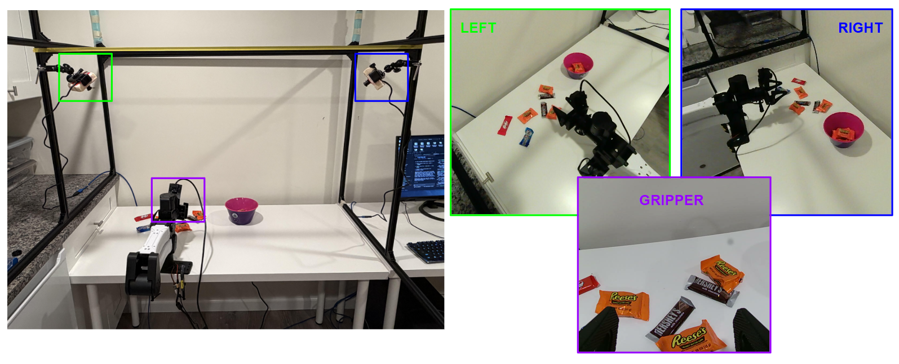

A Home Robocell
Planting a YAM in my Basement
This is just a short post to document the building of a robot workstation. I like to call this a robot "cell", but I've also heard "workstation", "workspace", etc. Whatever you call it, it is basically a table with a robot clamped to it, and some cameras to capture views of the scene. This gives you what you need to collect the minimum viable version of today’s canonical demonstration data: (1) robot that can hopefully read its own joint angles, (2) some cameras, one of which is attached to the end-effector.
Shopping List
Your robot of choice. I bought a YAM because it is lower in price than more traditional arms. I think "affordable" is probably too strong of a word, but in the world of robot hardware it’s all relative.
Some cameras:
Third-person views: 2x AR0234 cameras on Amazon with just the bare board and a lens. These are much cheaper that other options while still being an upgrade from a webcam. I got two for separate left/right views, but some setups just use a single overhead view. This is (unfortunately) one of the cheapest items on the shopping list so if you want to capture your robot from 8 different angles, go for it.
Wrist Camera: i2RT’s MF150, which is pricey but comes with a bracket to attach to the arm and is still cheaper than the other standard option for the YAM, the Intel D405. Prices are insanely inflated for the latter right now.
Some camera accessories: Mounting the bare-board cameras is awkward and I will explain my crude approach below. But you need to mount the cameras and connect to them. I purchased 2 ball-pivot mounts that are meant for phones so I could easily adjust the camera angle after mounting, and some long USB extension cables.
Cage / Frame: As far as I can tell, you need a minimum of 10 bars of 2020 to make a cage. This is basically the edges of a cube with two of the bottom links removed. Fortunately, you can buy 10-packs of 48" aluminum extrusion on Amazon. If you are willing to get more nuanced with it you should probably have different sizes for the uprights and horizontals, but I didn’t worry about it.
- Important Note: 48" assumes that you can put the cage on something that is level with the table, not the ground. If you are going to build from the ground-up and essentially encase the table itself, you need longer links.
Table: I have been very pleasantly surprised to learn that a junky old IKEA table I have is perfectly fine. Gut instinct says you need a really sturdy table for a robot arm, but I think the YAM is not strong enough that it is a true requirement. If you already have a beefy table though, use that.
Cage + Table Diagram
Here is what I mean by "a cube with two bottom links removed". This creates a frame that you can place over / around a table top:

Camera Mounting
My camera mounting leaves something to be desired. Ideally a custom enclosure and mount are probably needed for the bare-board camera, but I was in a pinch and found that I could press the boards into light styrofoam to give it a "housing". This is rigid enough to be grasped by a pinching phone mount.
I was fairly impressed with the mount hardware, and highly recommend a cheap ball-pivot mount to easily reposition things. I mounted the cameras in the corners of the cage, kind of like security cameras:

For the onboard camera, I purchased the MF150 camera from I2RT since it comes with a mounting plate. It is okay. My module has a smudge that seems to be inside the lens itself, and the grippers do not occupy much of the frame. I think I may look at tilting this further forward in the future.
Also, the cable for this camera sticks straight out of the top of the gripper like an antenna. I may have mounted it wrong. I looks really weird and I don’t see the cables in any of the product photos (which reinforces my notion that it looks weird, therefore it is not in product photos, and therefore I did it correctly). See below, the gripper preparing to select some Halloween candy.

Full Setup
This is what the complete cell looks like, including views from each camera:

Proof of Life
The YAM has an awesome out-of-the-box capability to move the arm with your hands in "zero-gravity" mode, and then replay a recorded motion. This is a great way to test your setup and even collect data. So for a fun proof-of-life, here is a three-view video of a replayed motion of picking up some Halloween candy. I believe the left/right view got swapped, but there are still three of them.
Interesting side note: My basement has flickering LEDs! I did not know this until I tried these cameras at a high frame rate. Yuck! I will need to get some better lighting.
Recent Posts:
IROS 2026
Poster Presentation and Favorites
October 05, 2026
A Home Robocell
Planting a YAM in my Basement
October 02, 2026
Finger Exoskeleton
Using Light Sensors to Read Finger Joint Angles
September 26, 2026
More Posts